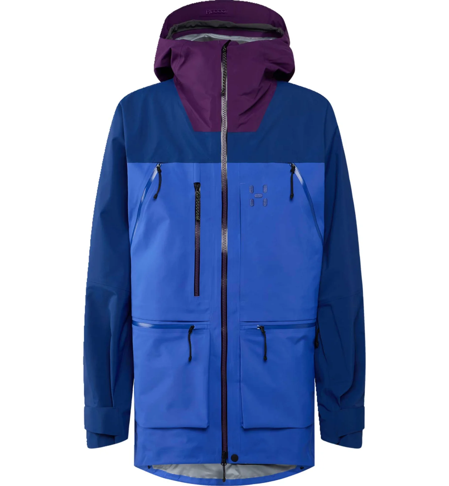
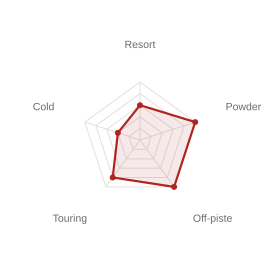
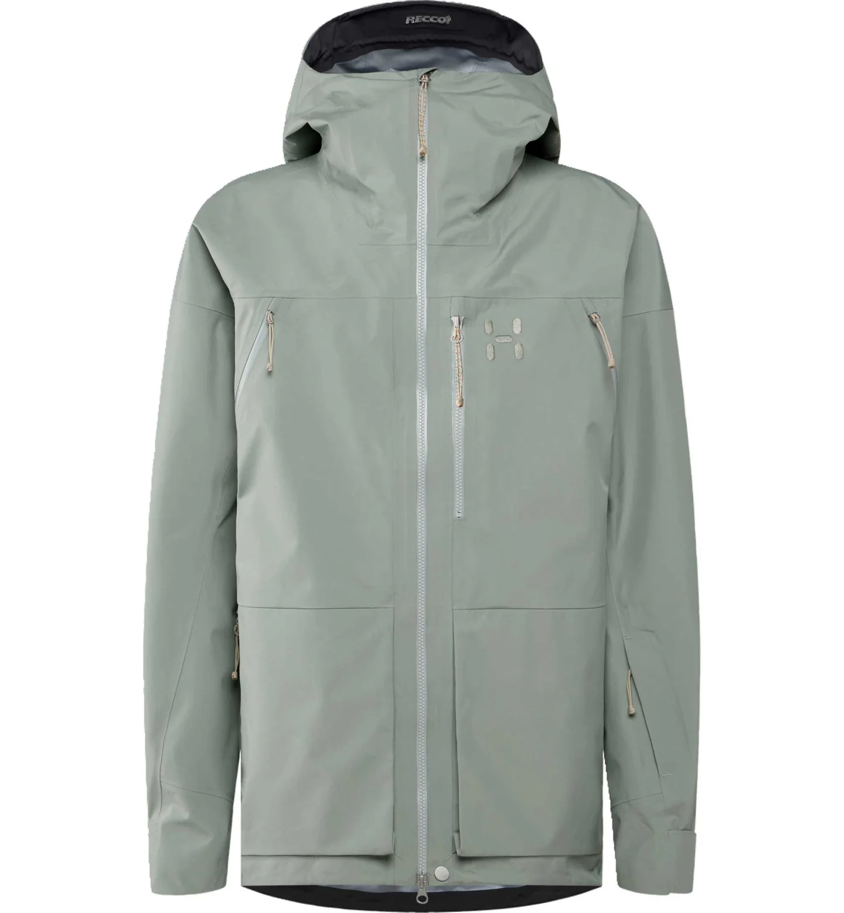
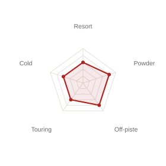
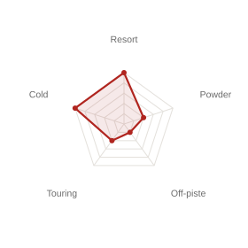
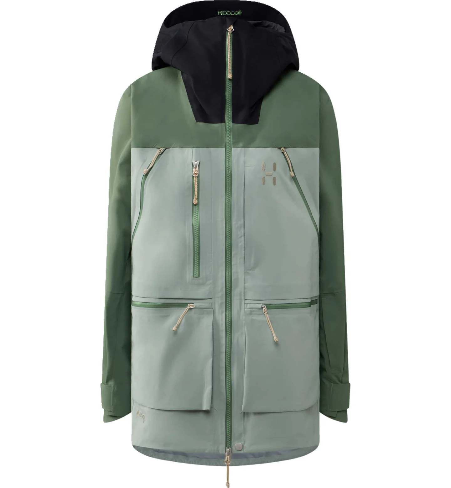
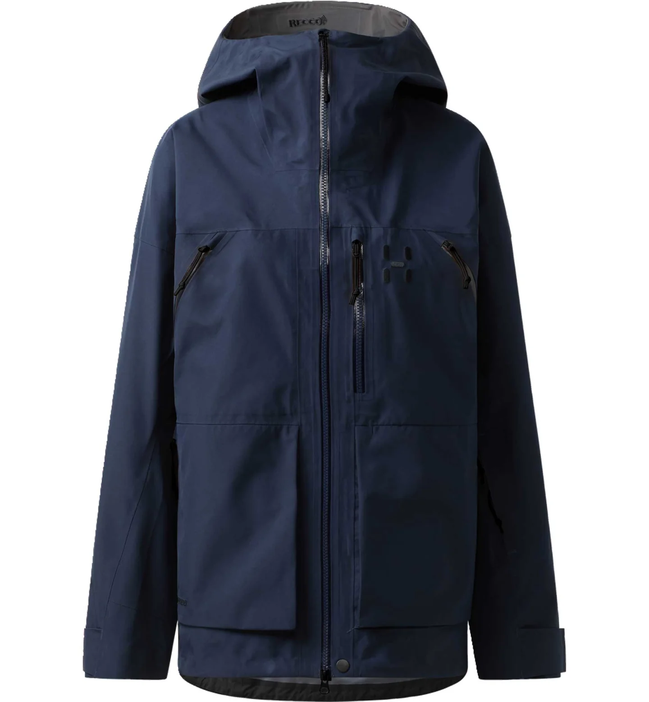
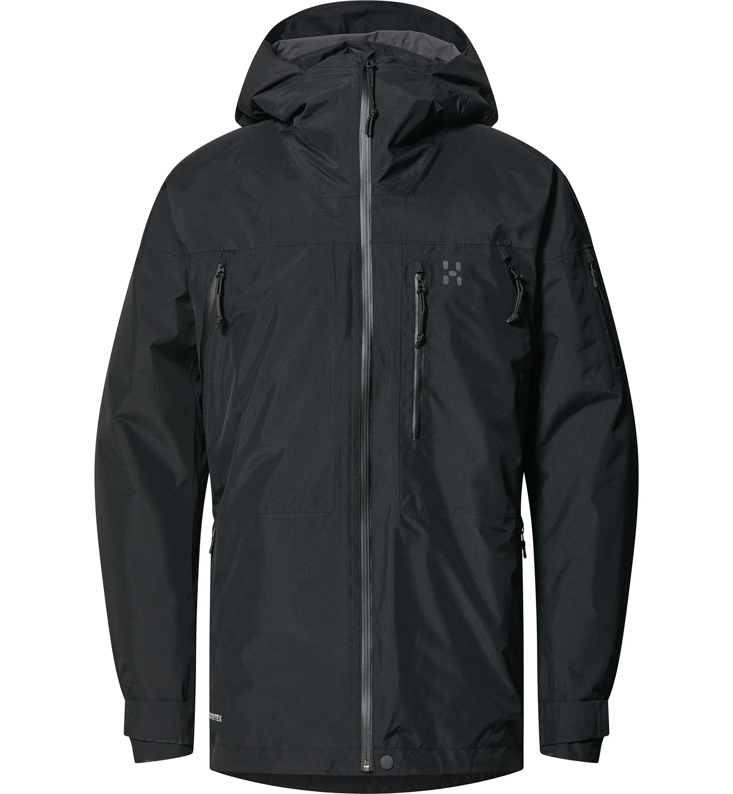
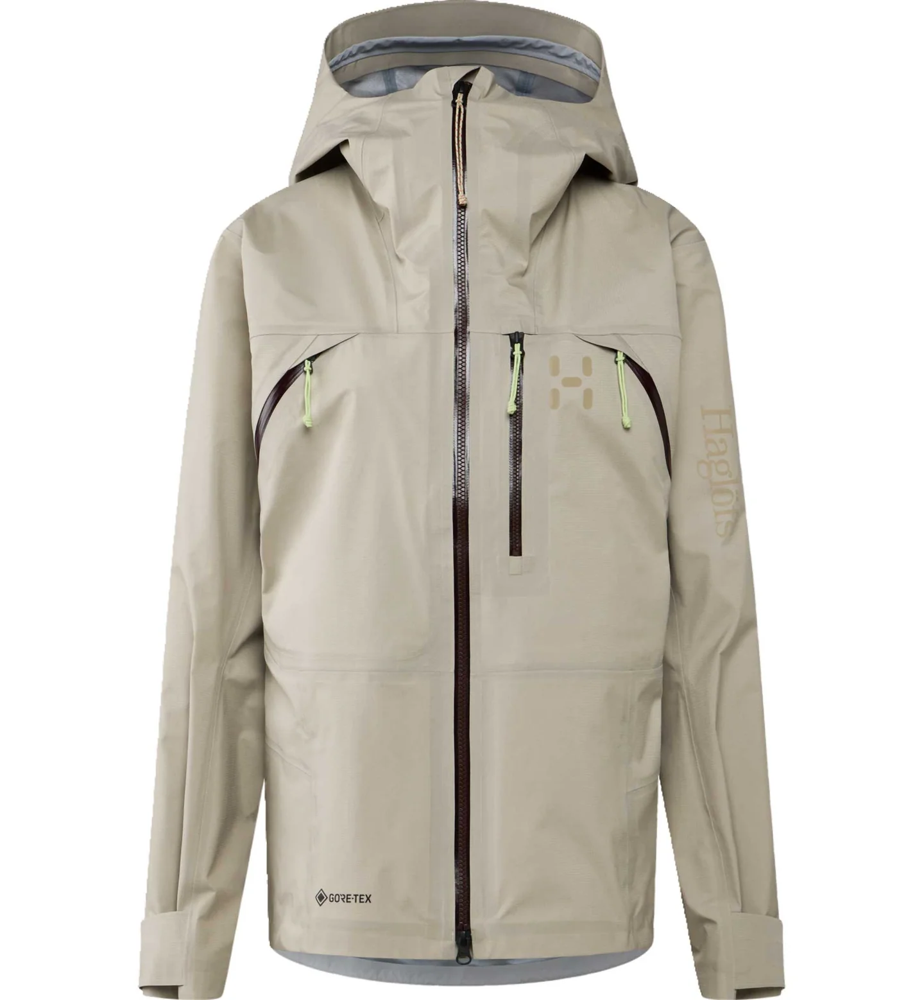
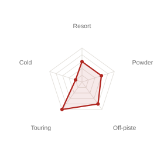

Jackets
Shell & insulated jackets for resort, backcountry and touring.

Freeride Shell
Vassi GTX Pro II Jacket
GORE-TEX Pro28,000mm665g
Fit chart


Freeride Shell
Vassi GTX II Jacket
GORE-TEX28,000mm720g
Fit chart


All-Mountain Shell
Alper Proof Jacket
PROOF™ Pro20,000mm670g
Fit chart


Insulated
Latnja GTX Insulated Jacket
GORE-TEX 2L28,000mm860g
Fit chart


Ski Touring Shell
Nallo Touring GTX Jacket
GORE-TEX28,000mm407g
Fit chart

Quick compare
Swipe left to see all columns →
| Jacket | Shell / Insulation | Waterproof | Breathability (RET) | Weight (L) | Best for |
|---|---|---|---|---|---|
| Vassi GTX Pro II Jacket | GORE-TEX Pro 3L / Shell only | 28,000mm | 13.5 | 665g | Freeride & backcountry |
| Vassi GTX II Jacket | GORE-TEX 3L / Shell only | 28,000mm | 20 | 720g | Freeride, everyday value |
| Alper Proof Jacket | PROOF™ Pro 3L / Shell only | 20,000mm | — (breathability 20,000g/m²/24h) | 670g | All-mountain, best value |
| Latnja GTX Insulated Jacket | GORE-TEX ePE 2L / Insulated (3-zone mapped fill) | 28,000mm | > 13 | 860g | Cold-weather resort & touring |
| Nallo Touring GTX Jacket | GORE-TEX 3L ripstop / Shell only | 28,000mm | 13 | 407g | Ski touring, lightest option |
Figures above are men's size L / women's size M unless noted. Reference prices and specs — please confirm final price and stock with a staff member.

Freeride Shell
Vassi GTX Pro II Jacket Women
GORE-TEX Pro28,000mm580g
Fit chart

Freeride Shell
Vassi GTX II Jacket Women
GORE-TEX590g
Fit chart

All-Mountain Shell
Alper Proof Jacket Women
PROOF™ Pro20,000mm620g
Fit chart


Insulated
Latnja GTX Insulated Jacket Women
GORE-TEX 2L28,000mm690g
Fit chart

Ski Touring Shell
Nallo Touring GTX Jacket Women
GORE-TEX28,000mm407g
Fit chart

Quick compare
Swipe left to see all columns →
| Jacket | Shell / Insulation | Waterproof | Breathability (RET) | Weight (L) | Best for |
|---|---|---|---|---|---|
| Vassi GTX Pro II Jacket Women | GORE-TEX Pro 3L / Shell only | 28,000mm | 13.5 | 580g | Freeride & backcountry |
| Vassi GTX II Jacket Women | GORE-TEX 3L / Shell only | 28,000mm (assumed) | — (not stated) | 590g | Freeride, everyday value |
| Alper Proof Jacket Women | PROOF™ Pro 3L / Shell only | 20,000mm (assumed) | — (assumed 20,000g/m²/24h) | 620g | All-mountain, best value |
| Latnja GTX Insulated Jacket Women | GORE-TEX 2L / Insulated (body-mapped fill) | 28,000mm | — (not stated) | 690g | Cold-weather resort |
| Nallo Touring GTX Jacket Women | GORE-TEX 3L ripstop / Shell only | 28,000mm (assumed) | 13 (assumed) | 407g (assumed) | Ski touring, lightest option |
Figures above are men's size L / women's size M unless noted. Reference prices and specs — please confirm final price and stock with a staff member.